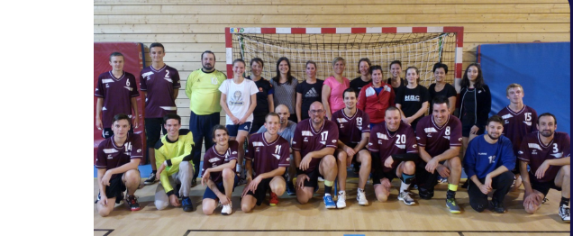

À propos de moi
|
Je suis étudiant en troisième année de Bachelor de technologie dans le domaine des Réseaux et Télécommunications (R&T) à l’IUT du Nord Franche-Comté. Je suis actuellement la spécialité Internet des Objets et Mobilité (IOM). Je suis très intéressé par l'automatisation, la programmation et le réseau depuis le collège. |

|
Mes centres d'intérêts
|
|
Pendant mon temps libre, je créé des programmes en C++ et Python. C++ : Objets connectés et Microcontrôleurs Python : Automatisation et Scripts utilitaires. Ci-contre se trouvent les langages de programmation que j'utilise le plus. |
|  | J'ai également fait du Handball de Septembre 2009 à Décembre 2021 |